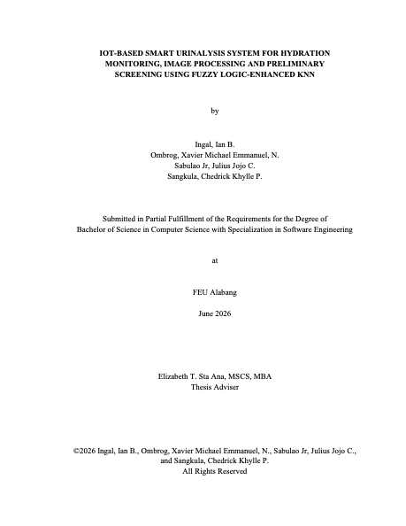

You tapped the Silver Swan card. Welcome.
An objective alternative to reading urine color by eye.
A portable, offline device that measures the pH, specific gravity and color of a urine sample inside a sealed optical chamber, then classifies hydration on a paired phone app.
- Thesis
- IoT-Based Smart Urinalysis System for Hydration Monitoring, Image Processing and Preliminary Screening Using Fuzzy Logic-Enhanced KNN
- Authors
- Ian B. Ingal, Xavier Michael Emmanuel N. Ombrog, Julius Jojo C. Sabulao Jr., Chedrick Khylle P. Sangkula
- Submitted
- FEU Alabang, June 2026
- Specific gravity
- 1.005–1.009
- pH range
- 4.5–8.0
- HSV centroid
- 55°, 17%, 100%
- Target color
- #FFFAD4
Pale yellow. Fluid intake is adequate — keep drinking at the same rate.
Values from Table 4.1 of the manuscript.
The problem with reading color by eye
Conventional urinalysis splits into two flawed options. Visual color matching against a printed chart is free and instant, but it is subjective: lighting, eyesight and judgment all change the answer. Full laboratory panels are objective, but they are expensive, slow, and out of reach for routine, everyday hydration checks.
This study designed and developed a portable, offline, multi-modal urinalysis device that measures pH, Specific Gravity and Hue-Saturation-Value color inside a controlled optical enclosure. A Bluetooth-paired mobile app runs an Enhanced Fuzzy k-Nearest Neighbors classifier on the fused readings to assign a hydration level and flag possible physiological abnormalities, with no internet connection or laboratory required.
The system was validated across 150 independent trials using chemically modified synthetic urine formulations spanning eight hydration levels and four abnormality classifications.
- Controlled light. A sealed optical chamber replaces room lighting and human judgment.
- Three measurements. Color alone can misread hydration, so pH and specific gravity are measured with it.
- Offline. Readings are processed and stored on the phone, so the system works without a connection.
- About nine seconds. Mean end-to-end latency from sensor to screen was 8,576.51 ms.
How a sample is read
From the sealed optical chamber to the classification on screen, each stage removes a source of error that the stage before it could not.
-
Stage 1
Controlled enclosure
A custom-integrated opaque housing with a matte-black interior and controlled white illumination, so ambient light never reaches the sample.
Matte-black interior · Fixed white light
-
Stage 2
Multi-modal sensing
A digital pH sensor, an analog TDS sensor for specific gravity, an AS7341 11-channel visible light sensor, and an ESP32 camera read the sample together.
pH · TDS / SG · AS7341 · ESP32-CAM
-
Stage 3
Offline mobile app
Readings transmit over Bluetooth Low Energy to a localized mobile application that stores and interprets results on the phone itself.
BLE · Local storage · No internet
-
Stage 4
EF-KNN classification
An Enhanced Fuzzy k-Nearest Neighbors algorithm weighs each neighbor by membership rather than a hard vote, assigning a hydration level and raising abnormality flags.
k = 3 · Fuzzy membership · Flags A–C
What the validation showed
100.00%
Hydration classification accuracy
All eight hydration levels classified correctly at k = 3, with a macro-averaged AUC of 1.0000.
99.33%
BLE transmission success rate
Sensor-to-phone delivery held across the full trial set, with a mean end-to-end latency of 8,576.51 ms.
130
ISO 25010 respondents
100 general end-users and 30 subject matter experts rated the software 4.37 and 4.42 overall, both “Agree”.
| Measure | Result | Note |
|---|---|---|
| pH sensor error (MAPE) | 7.72% | Within the 10% threshold, p = 0.0937 |
| Specific gravity sensor error (MAPE) | 0.13% | Within the 10% threshold, p = 0.8843 |
| Abnormality screening accuracy | 88.00% | Every high-pH and low-pH case detected |
| Independent validation trials | 150 | Synthetic urine, 8 hydration levels, 4 abnormality classes |
Neither chemistry sensor showed a statistically significant difference from its reference instrument.
Team Silver Swan
Four Computer Science students who built the enclosure, the firmware, the mobile application and the classifier from the ground up.
-

Ian B. Ingal
Researcher
Detail-oriented Computer Science undergraduate with strong foundations in software development, data analysis and problem-solving, building practical experience in programming, algorithm design and system development.
C++ · Java · Python · SQL
-

Xavier Michael Emmanuel N. Ombrog
Researcher
Computer Science student with a solid foundation in software development and technology, motivated to learn, contribute to innovative projects and gain hands-on experience in the tech industry.
C++ · Java · Python · JavaScript · Swift · Kotlin · NASM · SQL
-

Julius Jojo C. Sabulao Jr.
Researcher
Dedicated Computer Science student with a growing foundation in technology and software development, eager to contribute to innovative projects while gaining hands-on experience.
C++ · Java · Python · SQL
-

Chedrick Khylle P. Sangkula
Researcher
Computer Science student driven by curiosity and innovation, determined to work through complex problems with a keen eye for detail.
C++ · Java · Python · PHP · Kotlin · MySQL
- Thesis Adviser
- Elizabeth T. Sta Ana, MSCS, MBA
- Course Adviser
- Maricar D. Asuncion, MSCS, MAEd

The full study
Methodology, statistical validation and the complete ISO 25010 evaluation, with everything behind the numbers above.
Read the manuscript